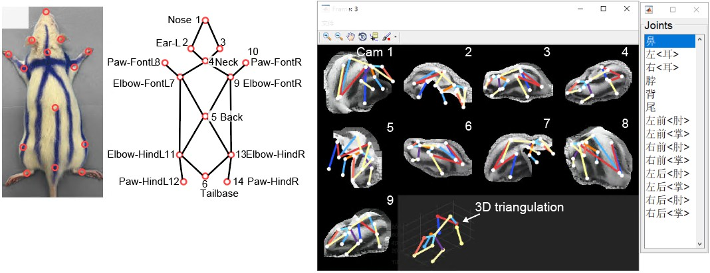

数据集制作&模型更新
标注大鼠分割
首先，使用 Labelme 软件进行数据标注。用 Polygon 工具，创建黑鼠 rat_black 和白鼠 rat_white的标签。

更新分割模型
逐行运行下面的代码，其中 mask_rcnn_r101_fpn_2x_coco_bwrat_816x512_cam9.py 是模型的配置文件（默认，推荐）。有需求可以改成其它的模型配置。
# 1. 数据制备： labelme to coco
# su chenxinfeng
conda activate DEEPLABCUT
# 将labelme数据标注的文件夹项目重命名。
## 注意事项1：文件夹不要有中文，打标的图片不要有中文
## 注意事项2：打标的图片数量 n>20 为了保证训练效果
LABEL_ME_POJECT=/mnt/liying.cibr.ac.cn_xxx/labelimages
NEW_NAME=/mnt/liying.cibr.ac.cn_xxx/bw_rat_1280x800_20230524
mv $LABEL_ME_POJECT $NEW_NAME
# 将labelme数据标注的文件夹项目转换为coco数据集格式。
# 注意事项：类别的名字要去 MMDET_DATA_TARGET 里面看，不要自己乱写。
python -m lilab.cvutils.labelme_to_coco $NEW_NAME
# 将coco数据集拆分训练集和验证集。 -s 参数表示训练集的比例，0.8 或 0.9为常用。
python -m lilab.cvutils.coco_split -s 0.9 ${NEW_NAME}_trainval.json
# 拷贝打标数据集到 mmdet 的数据集目录下
MMDET_DATA_TARGET=/home/liying_lab/chenxinfeng/DATA/CBNetV2/data/rats
cp -r ${NEW_NAME}_trainval.json ${NEW_NAME}_train.json ${NEW_NAME}_val.json \
${NEW_NAME} $MMDET_DATA_TARGET/
# 2. 模型训练
conda activate mmpose
cd /home/liying_lab/chenxinfeng/DATA/CBNetV2/
# 修改配置文件，使用vscode打开。
# 修改其中的 `data` 字段，指向刚刚拷贝的coco数据集目录。
CONFIG=$PWD/mask_rcnn_r101_fpn_2x_coco_bwrat_816x512_cam9.py
echo $CONFIG
# 使用多 GPU 或单 GPU 训练模型
# tools/dist_train.sh $CONFIG 4
python tools/train.py $CONFIG
# 3. 模型加速
python -m lilab.mmdet_dev.convert_mmdet2trt $CONFIG
# 4. 查看模型是否更新成功
ls -lh work_dirs/mask_rcnn_r101_fpn_2x_coco_bwrat_816x512_cam9/latest.*
latest.trt 模型权重文件。
标注大鼠3D关键点
首先，使用 Label3D_Manager 进行数据标注。Label3D_manager 是在官方版本上做更改，以适应OBS 录制的视频，已经使用大鼠的14个关键点。 
应该得到 anno.mat 文件，其中包含标注的3D关键点信息。
制备数据集
conda activate mmdet
source='/mnt/liying.cibr.ac.cn_usb3/wsy/ysj/segpkl/outframes'
datadir='/home/liying_lab/chenxinfeng/DATA/dannce/data/bw_rat_1280x800x9_2024-11-27_photometry_voxel'
cp -r $source $datadir
python -m lilab.dannce.s1_anno2dataset $datadir/anno.mat
# 找到生成的*_voxel_anno_dannce.pkl，使用代码修正其身体中心点（以2D mask 中心点，三角化得到3D中心点）。
python -m lilab.dannce.p2_dataset_com3d_refine_byseg ${datadir}_anno_dannce.pkl
训练DANNCE模型
逐行运行下面的代码，用于训练模型。其中rat14_1280x800x9_mono_young 是一个已经被创建过的项目环境（推荐）。根据需求，也可以选择其它项目。
# cd 进入项目路径
cd /home/liying_lab/chenxinfeng/DATA/dannce/demo/rat14_1280x800x9_mono_young
# 改变项目配置文件，添加 数据集路径。
echo io_max.yaml
# 修改 io_max.yaml, 添加数据到 exp/label3d_file
python -m dannce.cli_train ../../configs/dannce_rat14_1280x800x9_max_config.yaml
转化模型为 tensorrt 加速的模型。
# Offline 场景。
cd /home/liying_lab/chenxinfeng/DATA/dannce/demo/rat14_1280x800x9_mono_young/DANNCE/train_results/MAX
python -m lilab.dannce.t1_keras2onnx latest.hdf5
choosecuda 3,0,1,2
polygraphy run /home/liying_lab/chenxinfeng/ml-project/LILAB-py/lilab/tensorrt/constrained_network.py \
--precision-constraints obey \
--trt-min-shapes input_1:[1,64,64,64,9] \
--trt-max-shapes input_1:[4,64,64,64,9] \
--trt-opt-shapes input_1:[2,64,64,64,9] \
--trt --fp16 --save-engine latest_dynamic.engine &
choosecuda 0,1,2,3
polygraphy run /home/liying_lab/chenxinfeng/ml-project/LILAB-py/lilab/tensorrt/constrained_network.py \
--precision-constraints obey \
--input-shapes input_1:[2,64,64,64,9]\
--trt --fp16 --save-engine latest.engine &
# Realtime 场景
python -m lilab.dannce.t1_keras2onnx_rt latest.hdf5
choosecuda 1,2,3,0
polygraphy run /home/liying_lab/chenxinfeng/ml-project/LILAB-py/lilab/tensorrt/constrained_network_rt.py \
--precision-constraints obey \
--trt-min-shapes input_1:[1,64,64,64,9] \
--trt-max-shapes input_1:[2,64,64,64,9] \
--trt-opt-shapes input_1:[1,64,64,64,9] \
--trt --fp16 --save-engine latest.idx.engine
wait
最后得到 latest_dynamic.engine 和 latest.idx.engine。